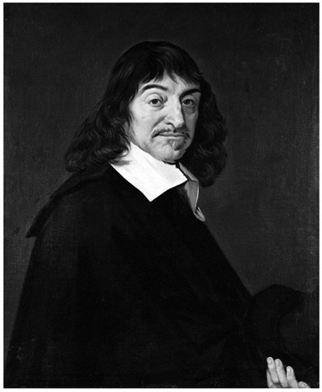
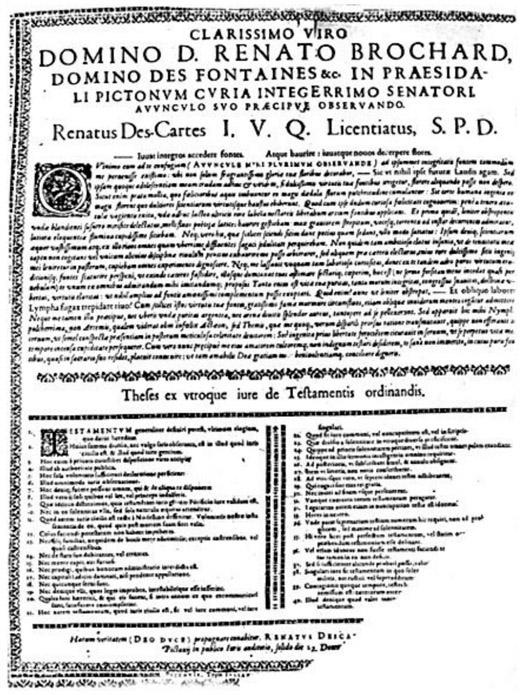
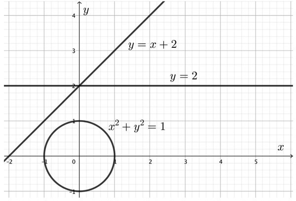
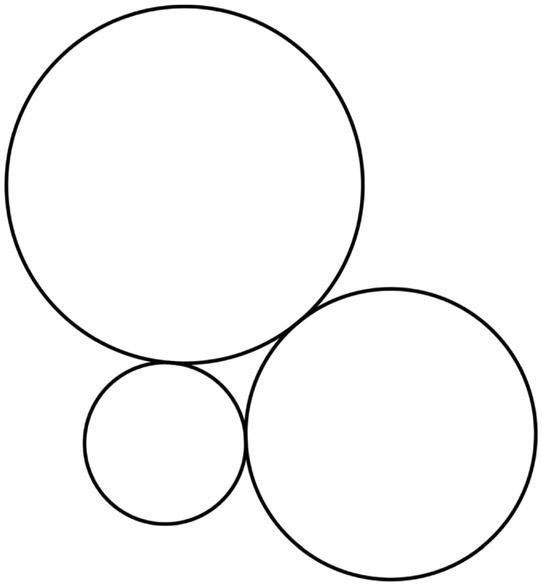
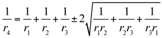
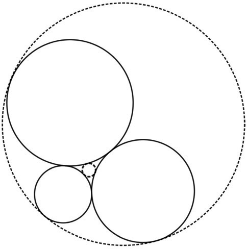

René Descartes: French (1596–1650)
The 2017 Nobel Prize in Physiology or Medicine was awarded to Jeffrey C. Hall, Michael Rosbash, and Michael W. Young, “for their discoveries of molecular mechanisms controlling the circadian rhythm.”1 The circadian rhythm is a general term for biological processes oscillating with a period of approximately twenty-four hours, meaning that these processes are adapted to the rotational period of the earth. Life on Earth has developed biological clocks, which are responsible for regulating metabolism, hormone levels, sleep, and other aspects of our physiology. Our inner clock is independent of sunlight and would maintain our periods of sleepiness and wakefulness in a cycle of about twenty-four hours, even if we were living in complete darkness or underground, without any natural light sources. A mismatch between our inner clock and our environment or lifestyle has adverse effects on our well-being and productivity. For example, when we travel across several time zones, we may experience jet lag, a temporal phenomenon caused by a large shift between the time kept by our internal biological clock and the external time dictated by the environment. However, not all people living in the same time zone have synchronized inner clocks; there is some individual variation, depending on lifestyle, work schedule, and biological factors. For instance, our circadian rhythm gets shifted during adolescence, letting us go to bed late. This explains why most teenagers are “night owls.” Yet, for biological reasons, teenagers also need more hours of sleep than adults do. If the school day starts early, it therefore becomes difficult for teenagers to get enough sleep. Besides, getting up out of bed is quite a challenge when your inner clock commands you to sleep for another two or three hours.

Figure 14.1. René Descartes. (Portrait by Franz Hals, oil on canvas, ca. 1649–1700.)
When the French philosopher and mathematician René Descartes (1596–1650) was about ten years old, he was sent as a boarding student to the Jesuit College at La Flèche, established in 1604 by King Henri IV of France. There, he was granted an unusual privilege, which would probably be a dream come true for any teenager regularly struggling with early-morning wake-up calls. While the other boys at boarding school had to get up at five o’clock in the morning, René was officially allowed to stay in bed until eleven o’clock because of his weak physical condition and his frequent health problems. Young René enjoyed sleeping late, but even after he woke up, he often remained in bed for several hours. Alone and without any distraction, he would meditate on the knowledge and subjects he was taught at La Flèche, including classical studies, traditional Aristotelian philosophy, science, and mathematics. He later described his education at La Flèche as follows:
I had been assured I could acquire a clear and certain knowledge of all that is useful in life. I had an extreme desire to learn. But as soon as I had completed the course of study, at the end of which one is usually received into the rank of the learned, I entirely changed my opinion. For, I found myself embarrassed by so many doubts and errors, that I thought I had gained nothing else from trying to instruct myself, than to have more and more discovered my ignorance.2
There was only one subject in school that was free of doubt, a quality Descartes found very appealing:
I took pleasure, above all, in mathematics, because of the certainty and the absoluteness of its reasons; but I had not yet found out its true use; and, thinking that it served only for the mechanical arts, I was astonished that, its foundations being so firm and solid, nothing had ever been built on them that was more exalted.3
Throughout his life, Descartes kept the habit of spending a considerable amount of daytime in bed, pondering fundamental philosophical and scientific questions. Isolated from the world around him, he was able to focus his mind and reach a state of deep contemplation, disputing with himself about what we know and what we can know. Today, he is most famous for the Latin phrase “cogito ergo sum.” Translated into English, this is, “I think, therefore I am.” It means that we cannot doubt of our existence while we doubt; that is, the very act of thinking serves as a proof of the reality of one’s own mind. Descartes admired the strict deductive reasoning used in mathematics and the absolute certainty of mathematical results. He thought that all science and philosophy should be based on mathematics. This is meant in the sense that we cannot accept anything as certain unless it can be deduced by a complete and rigorous chain of evidence from already-secured knowledge or observations of nature and scientific experiments. In one of his most important publications, the Discours de la méthode pour bien conduire sa raison et chercher la vérité dans les sciences (Discourse on the Method of Rightly Conducting One’s Reason and of Seeking Truth in the Sciences), Descartes writes:
The long chains of simple and easy reasoning by means of which geometers are accustomed to reach the conclusions of their most difficult demonstrations led me to imagine that all things, to the knowledge of which man is competent, are mutually connected in the same way, and that there is nothing so far removed from us as to be beyond our reach, or so hidden that we cannot discover it, provided only, we abstain from accepting the false for the true, and always preserve in our thoughts the order necessary for the deduction of one truth from another.4
However, in order to deduce truths from other truths, one first needs a starting point or a premise on which to base further reasoning. This basis must be provided by statements that are taken to be true or are accepted without controversy or question. Statements of this type are called postulates or axioms; they cannot be deduced from more-elementary statements. The foundations of modern mathematics are based on minimal lists of axioms. For instance, many facts in arithmetic can be derived from more-basic facts; however, as one traces these basic facts back to even more basic facts and continues with this process, one will eventually end up at statements that cannot be reduced any further. It turns out that number theory (the study of integers) can be built upon the so-called Peano axioms, named after Giuseppe Peano (1858–1932) (see chap. 39). These axioms consist of five statements formulated in the language of mathematical logic and defining the set of natural numbers in terms of properties that are independent of their concrete representation. The Peano axioms can be viewed as the first principles of number theory. Descartes’s famous “cogito ergo sum” plays a similar role for modern Western philosophy. In his Principia Philosophiae (Principles of Philosophy), he characterizes first principles as follows:
First, they must be so clear and so evident that the human mind cannot doubt of their truth when it attentively considers them; and second, the knowledge of other things must depend upon these Principles in such a way that they may be known without the other things, but not vice versa.5
However, Descartes not only tried to put philosophy on a mathematical foundation but also made important contributions to mathematics itself, making him one of the most influential mathematicians of his time. We will reveal some of his achievements in mathematics and some of the mathematical notations and concepts attributed to him, while giving a brief overview of his life.
René Descartes was born at his grandmother’s home in the commune La Haye en Touraine, France (renamed La Haye-Descartes in 1802 and renamed again to Descartes in 1967), on March 31, 1596. His father, Joachim, had studied law and was a counselor at the court of justice. When René was only one year old, his mother, Jeanne, died in childbirth; René was sent back to this maternal grandmother, who would care for him. His father remarried in 1600, and René continued living with his grandmother, together with two older siblings. After his education at La Flèche, he entered the University of Poitiers, where he studied law, following the paths of his father and his maternal uncle, René Brochard, who was a deputy and judge at the Estates-General in Poitiers. Descartes received his degree and legal license in 1616. Nothing was known about the content of his thesis until 1981, when a curator for the Sainte-Croix Museum (Poitiers) made an unexpected discovery while reframing a seventeenth-century engraving that had been hanging in a museum restaurant. He found, stuffed in the back of the engraving, a public broadsheet that had been printed in 1616 and announced the oral thesis defense of René Descartes (see fig. 14.2).
The broadsheet contains an affectionate dedication to his uncle René Brochard and a list of forty statements summarizing his thesis. However, Descartes did not pursue a career as a lawyer or a judge any further. Although the theory of law has some similarities to mathematics, since deductive reasoning is used to draw conclusions from legal text, there is also a profound difference: mathematical statements are universal; legal text is invented by humans and has nothing to do with nature. Descartes decided to stop devoting his time and energy to the study of books from which he would not learn anything about nature. In his Discourse on the Method, he recalls:
I entirely abandoned the study of letters, resolving to seek no knowledge other than that which could be found in myself or else in the great book of the world.6
In 1618, Descartes entered a military school in Breda, Netherlands, where he studied mathematics and physics, to become a military engineer. After serving in the armies of Maurice of Nassau and Maximilian of Bavaria, he spent a lot of time between 1620 and 1628 traveling through northern and southern Europe and developing his ideas for a philosophy based on the concept of mathematical proofs. In Paris, he was in regular contact

Figure 14.2. Broadsheet advertising Descartes’s oral thesis defense in 1616.
with the French priest and mathematician Marin Mersenne (1588–1648), who had also studied at La Flèche and who encouraged him to publish his thoughts on philosophy and science. Although Paris was one of the intellectual centers of the world at that time, Descartes left Paris in 1628 and returned to the Netherlands, seeking a secluded place without distraction, to work on his ideas for a new philosophy. In 1633, he completed his first major treatise on physics, The World (French: Traité du monde et de la lumière), based on the heliocentric model of the sun and the planets developed by Polish mathematician Nicolaus Copernicus. But when Descartes learned that Galileo Galilei was condemned by the Catholic Church for defending Copernicanism in his Dialogue, he shied away from publishing his treatise. However, fragments of this work appeared together with his famous Discourse on the Method in 1637, in three essays: “Les Météores” (“The Meteors”), “La Dioptrique” (“Dioptrics”), and “La Géométrie” (“Geometry”). The Discourse on the Method consists of six parts and is one of the most influential works of modern philosophy; it is also the first important modern philosophical work that was not written in Latin. Descartes wrote it in French to make his work accessible to everyone, not only to scholars. He describes a universal method of deductive reasoning, applicable to all sciences. In the second part, Descartes presents the four basic rules of his method, revealing his inspiration from mathematical proofs:
- Accept nothing as true that is not self-evident.
- Divide problems into their simplest parts.
- Solve problems by proceeding from simple to complex.
- Recheck the reasoning.
Of the three essays supplementing the Discourse on the Method, “La Géométrie” is by far the most important. With this work, Descartes revolutionized mathematics by bringing together Euclidean geometry and algebra to what is now known as analytic geometry. Before Descartes, geometry and algebra had essentially been separate fields, whereby geometry was considered to be fundamental. Descartes discovered that with the help of a coordinate system defined by two directed perpendicular lines, geometric shapes can be described by algebraic equations. As the simplest examples, figure 14.3 shows two straight lines and a circle centered at the origin, together with their corresponding equations relating the x-coordinate and the y-coordinate.
Coordinate systems with perpendicular axes are called Cartesian coordinates in honor of Descartes (Cartesius is the Latin version of “Descartes”). By representing geometric objects such as straight lines, circles, and other curves by algebraic equations, suddenly, problems in geometry could be solved by algebraic methods, and vice versa. In particular, geometric relations between geometric objects, such as tangency, intersection points, and so on, could be described by corresponding algebraic equations. Today, this is also referred to as analytic geometry. For example, using his method of coordinates, Descartes discovered the following algebraic solution to a special case of Apollonius’s problem of finding a circle touching three mutually tangent circles, as shown in figure 14.4.

Figure 14.3. Curves can be represented by algebraic equations.

Figure 14.4. Three circles tangent to each other externally.
If the three given circles have radii r1, r2, and r3, then the radius of the fourth circle is determined by the equation

where the ± sign reflects the fact that there are two solutions to the problem—shown as the two dashed circles in figure 14.5. This statement is known as Descartes’s theorem.
The introduction of Cartesian coordinates was a milestone in the history of mathematics and also a fundamental ingredient in the development of calculus by Isaac Newton and Gottfried Wilhelm Leibniz.
The convention of using the letters x, y, and z to represent variables and letters a, b, c, . . . for known quantities is also attributed to Descartes, as is the use of superscripts for powers or exponents, such as x2.

Figure 14.5. The dashed circles are tangent to all three solid circles.
After his seminal Discourse on the Method, Descartes continued to produce important works concerning both mathematics and philosophy, the most comprehensive of which is the Principia Philosophiae, published in Amsterdam in 1644. By 1649, Descartes had become one of the most famous philosophers and scientists in Europe, in spite of not holding any academic position. Yet he had always preferred to be left alone and to work isolated from the world, without distractions. He kept his residence in the Netherlands a secret and held contact with the scientific community only through exchanging letters with Marin Mersenne, who was one of the very few persons who knew Descartes’s address.
In 1649, Queen Christina of Sweden invited Descartes to her court in Stockholm, to organize a scientific academy and to teach her. Some persuasion was necessary until Descartes finally accepted and moved to Sweden in the middle of the winter. He had kept the habit of lying in bed until eleven o’clock throughout his lifetime, but the twenty-two-year-old Christina of Sweden insisted upon receiving philosophy lessons at five o’clock in the morning. The fifty-three-year-old Descartes now had to break the rhythm he was accustomed to and fight against his inner clock, which weakened him and made him more susceptible to infections. Walking to the queen’s palace every morning in the cold Swedish winter did the rest, and he soon caught a cold from which he developed pneumonia. Only ten days after falling ill, René Descartes died on February 11, 1650, in Stockholm.